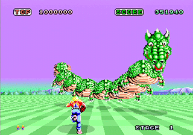
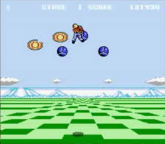
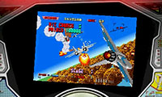
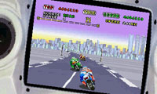

ニンテンドー３ＤＳで、80年代のアーケードゲームを3D立体映像で復刻したゲーム存在します。「セガ３Ｄ復刻プロジェクト」
～当時、世界の最先端だったセガのアーケードゲーム～
80年代のゲームセンターには、家庭用ゲームでは絶対に味わうことができない。
・10年先を行く美しいグラフィック
・画面に合わせて上下左右に座席が動くことによる臨場感
が存在しました。
※ 1985年のスペースハリアー(アーケード)が家庭用ゲームに完全移植されたのは、1996年のセガサターンであった。(Wikipedianによる情報)
※ 自分は幼かったので、ゲームセンターに余り行くことはなかったけど、初めて見た時・プレイした時の衝撃は忘れられない…
そのゲームを３ＤＳに、立体映像を追加して復刻されたのが、このシリーズであります。
スペースハリアー(アーケード版)

スペースハリアー(ファミコン版)

グラフィックも迫力も全然違いますし、アーケード版は座席が動きました。
80年代のアーケードゲームは当時10年先を進んでいました。
スペースハリアーの存在を知ったのは、大人になってからですが…
～実は簡単でない３Ｄ化～
実は、もともと２Ｄのゲーム作品を３Ｄの立体映像にしてリメイクするには簡単なことではなく、１から作り直す以上の苦労があると。ゲームの開発スタッフのインタビュー記事をみればわかります。
ゲームを他のゲームに復刻(移植)する場合はエミュレータという技術が使用されます。エミュレータというものは、当時のゲーム機と同じプログラムを、現在のゲーム機で動かす技術であり、任天堂のバーチャルコンソールや、ソニーのゲームアーカイブスで使用されています。
プログラムと言うものは、
１．仕様書・企画書(設計図)
２．ソースコード(いわゆる人間が打ち込むプログラム)
３．機械語(ゲームソフトに実際に記録される情報(人間には理解し難い))
という順で作られます。
エミュレータというものは、３の状態のまま、別のゲーム機で動かすことになるため、「当時のゲームと同じ動きが保証される」ことになります。
元のゲームにバグが存在した場合も、そのまま引き継がれます。
(一部のスーパーファミコンのゲームで、ある操作をするとセーブデータが消えるバグが、Wiiのバーチャルコンソールでそのまま再現された)
また、３の状態になってしまったら、基本的に修正や解析は非常に困難になります。
さらに昔のゲームは、１，２のようなゲーム開発の資料の入手が困難なことが多く、その場合は実際にゲームをプレイして目で確認しながら、同じ動きを再現する。「目コピー」(１から全て作り直す)という手法が使用されます。
なので、３Ｄリメイクする場合は作り直す「目コピ」という手法のほうが開発コストがかからないということになりますが、
「当時のゲームと全く同じ動きになるとは限らない」ということになってしまいます。
職人の「目コピ」技術によってはオリジナルの物と見分けが付かないほど正確に作られるので、「目コピ」だからダメということにはなりません。
～Ｍ２というゲーム会社は凄い～
ゲームを発売するのは、任天堂やセガと言った一般的には有名なゲーム会社ですが、実際に開発するところはそうとは限りません。セガ３Ｄ復刻プロジェクトは「Ｍ２」という会社によって開発されています。
Ｍ２(ゲーム会社)の凄いところは、３Ｄリメイクする際に「目コピ」するのではなく、「当時のプログラムをベースにゲームを動かす」ということです。
基板からプログラムを解析して、３Ｄ機能を追加、ゲーム内容を追加し、それをエミュレータなどで動かしてしまう。
上記では、非常に困難と思われることを当たり前のようにやってのける技術力をもっています。
インタビュー記事を見る限り、ゲーム開発に相当苦労していることが感じられます。
また、アーケードゲームのモーターやスイッチの音を実在の筐体から録音したり、設定オプションを増やしたり、とにかくゲーム制作に対するこだわりが半端ではないところがあります。
ただでさえゲーム業界が下火になってきている中、他のゲームメーカーとは一線を風靡したこだわりやゲームに対する愛が感じられます。
最近は、アーケードゲームの移植だけでなく、家庭用のセガのメガドライブのゲームなども、３Ｄリメイクされています。
こちらも、基本的に当時のプログラムをベースに動かす技術が使用されています。
任天堂のファミコンクラシックスでは残念ながら、当時のゲームと同じ動きでないものも確認されています。(あえてゲーム名は出しません)
当時そのゲームをやり込んだ人からすると、見た目は同じでも全くの別物ということになってしまいます。新たなリメイクと思えばそれまですが…
セガのゲームをプレイする人は、任天堂と違って、コアゲーマーが多いと思われます。そういった人からすると、移植・復刻では当時のままの内容で遊べないと嬉しくありません。M2という会社は、今までいくつものアーケードゲームの移植をしてきた実績のある会社で、移植度が非常に高いというのも、ゲーム好きの間では定評があります。
だからこそ、ゲームの復刻に関しては、どんな条件でも「当時のプログラムを動かす」というこだわりがあるのだと思われます。
プレイするゲームを開発会社で選ぶことはあまりしたくはありませんが、もしゲームの移植に「Ｍ２」という会社が担当していればそれは間違いなく、どこのゲーム会社より安定したクォリティを提供してくれるでしょう。


3D復刻プロジェクトの「アフターバーナーⅡ」「スーパーハングオン」
ゲームだけでなく、筐体周りのまで再現する半端でないこだわり。
スーパーハングオンは傾け操作でのプレイも楽しめます。
ゲームスタッフのインタビュー記事
セガ３Ｄ復刻プロジェクト(開発元：Ｍ２)
セガのゲーム・技術は当時(今でも)世界の最先端だと思う(多分)
「3D スペースハリアー」インタビュー
「3D ソニック・ザ・ヘッジホッグ」インタビュー
３Ｄクラシックス
３ＤＳの立体映像はレトロゲームのほうがインパクトがある
３Ｄクラシックス インタビュー
自分は、こういうゲーム開発者の記事に弱い
今まで何本ゲームをスタッフインタビュー記事で購入を決めたことか…